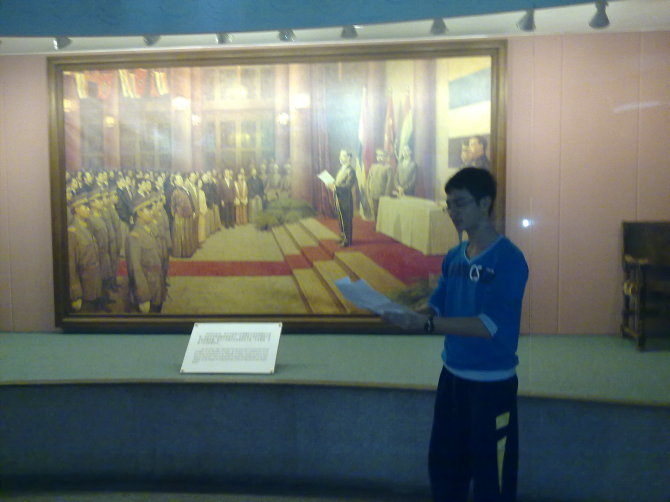

Crónica del Examen de la Liga de Informática de la Escuela | Original, traducido por IA
Desde el distrito Luogang de Guangzhou, partí hacia el pueblo Nanlang en Zhongshan. Originalmente pensé que el viaje sería tan largo como para poder rendir un examen de chino y luego uno de matemáticas, pero resultó que no necesité el de chino, ya que solo tomó 2 horas. En el pueblo Nanlang, aparte de la famosa y bulliciosa Escuela Conmemorativa, pocas cosas son conocidas. Los estudiantes de la Escuela Conmemorativa a menudo pueden caminar hasta la antigua residencia de Sun Yat-sen, y las parejas pueden ir allí a tomarse de la mano y mirar los palanquines, imaginando la escena en la que Sun Yat-sen y Song Qingling se miraban profundamente a los ojos, sin palabras. La cama en la que dormía Sun Yat-sen es más ancha que la de Yu Yan, pero unos diez centímetros más corta. Supongo que Sun Yat-sen podría haber sido un verdadero hombre de seis pies. Un hombre de seis pies que yacía en esa cama desde 1892 hasta 1895.
El día 12, llegué al primer comedor de Ji Zhong alrededor de las 7 de la mañana para desayunar. Ji Zhong tiene dos comedores, pero no tienen la elegancia de los de Yu Yan, así que los llamé simplemente: el primer comedor y el segundo comedor. El segundo comedor no estaba abierto hoy, y cuando pasé a las 7:30, estaba completamente vacío. En el primer comedor, a las 7:20 todavía había muchos estudiantes de Ji Zhong con sus uniformes azules y blancos desayunando. Es poco probable que tantas personas se hayan levantado tarde colectivamente, y considerando que hoy es sábado, probablemente sea porque su horario de fin de semana es diferente al de los días normales.
Jizhong me da la sensación de estar en un campus universitario. Es muy espacioso, con largas aceras a ambos lados de las amplias avenidas principales. Si se construyeran aceras en el tramo que va desde el edificio de aulas de Yuyan hasta el comedor, parecería bastante absurdo. Pero en Jizhong, esto es algo muy natural. Jizhong está construido en medio de un bosque, con árboles frondosos y verdes.
Poco antes del examen, conocí a un chico gordo, al que llamaré “Gordo”. Gordo me compartió su experiencia aprendiendo algoritmos. Ellos, decenas de personas, jugaban CS juntos en la sala de computación. Más tarde, el profesor pensó que si seguían jugando así, estarían perdidos, así que decidió prohibirles jugar, probablemente cortando la conexión a internet. Entonces, todos decidieron jugar al Buscaminas como forma de protesta…
Al llegar a la sala de computación para el examen, las colinas cubiertas de hierba verde capturaron mi vista. Para este examen, se proporcionó Windows XP, en lugar del Linux que me había estado causando depresión y tristeza. En los últimos días, había instalado Linux y me había familiarizado un poco con el entorno, pudiendo escribir y depurar código sin problemas. Sin embargo, me tomó casi cinco horas dominarlo realmente. Si hubieran proporcionado Linux, habría sido un golpe fatal para personas como Fat Brother, que nunca antes habían programado en LINUX. No sé cómo se programa PASCAL en Linux, pero encontrar la línea de comandos de Linux —el terminal— podría hacer que los enlaces de fosfato de alta energía en el cuerpo se rompan uno por uno. Sentado a mi derecha estaba Chen Yixiang de Shantou. Escribía código rápidamente, completando todas las preguntas con fluidez y utilizando datos extremos para probar sus programas.
Mi experiencia en el examen fue mucho más complicada. El examinador probablemente quería animar a todos con la primera pregunta, dándonos confianza, pero yo no aproveché su buena intención y me sentí completamente abrumado. C++, por favor, concédeme un espacio enorme para crear una matriz de 100000100000. Me respondió: “No puedo hacerlo, por favor optimiza tu programa y reduce su complejidad espacial”. Yo dije: “¿Qué?” No tuve más remedio que arriesgarme. Y, sin darme cuenta, logré reducir el espacio de 100000100000 a 100000*3.
El examinador ya había previsto que encontraría dificultades en la primera pregunta, así que me dio otra para aumentar mi confianza. Esta vez, seguí las instrucciones. La tercera pregunta trataba sobre superar un juego en un número específico de pasos. Fue la primera vez que escribí un programa tan divertido, y mientras jugaba, el examen terminó…
Al día siguiente seguimos divirtiéndonos… Poder salir a Yuyan no es fácil, así que cuando estás afuera, hay que disfrutar al máximo.

